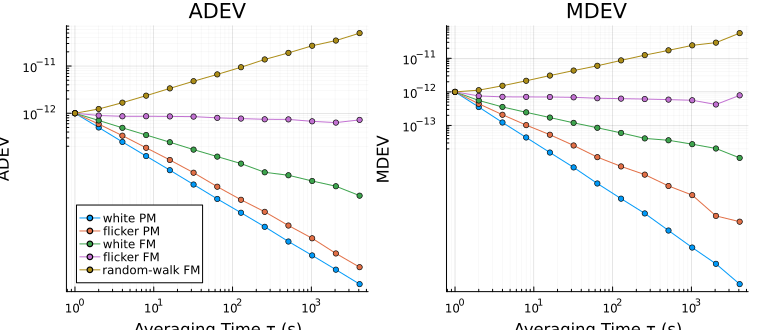

Power-law noise
The random part of a clock's instability is modeled as a sum of power laws in the spectrum of its fractional frequency (SP1065 §3.2; IEEE Std 1139-2022, Annex B):
\[S_y(f) = \sum_α h_α f^α .\]
Each term is a noise type with its own slope on a stability plot. That is what lets a plot be read, and it is what every confidence interval and bias factor in the package depends on.
The noise types
| Label | Noise | $α$ | ADEV, HDEV | MDEV, MHDEV | TDEV, HTDEV |
|---|---|---|---|---|---|
:WHPM | white PM | 2 | $τ^{-1}$ | $τ^{-3/2}$ | $τ^{-1/2}$ |
:FLPM | flicker PM | 1 | $τ^{-1}$, nearly | $τ^{-1}$ | $τ^{0}$ |
:WHFM | white FM | 0 | $τ^{-1/2}$ | $τ^{-1/2}$ | $τ^{1/2}$ |
:FLFM | flicker FM | −1 | $τ^{0}$ | $τ^{0}$ | $τ^{1}$ |
:RWFM | random-walk FM | −2 | $τ^{1/2}$ | $τ^{1/2}$ | $τ^{3/2}$ |
:FWFM | flicker-walk FM | −3 | $τ^{1}$, HDEV only | $τ^{1}$, MHDEV only | $τ^{2}$, HTDEV only |
:RRFM | random-run FM | −4 | $τ^{3/2}$, HDEV only | $τ^{3/2}$, MHDEV only | $τ^{5/2}$, HTDEV only |
The columns give the slope of each deviation on log-log axes. The two phase noises share the slope $τ^{-1}$ under the Allan deviation, flicker PM with a logarithmic factor, and the modified deviations separate them (SP1065 §5.1). The Allan variances do not converge for the last two rows; the third difference of the Hadamard family does (SP1065 §3.4). The total and Thêo estimators follow the slope of the deviation they extend.
A linear frequency drift $D$, in fractional frequency per second, is not noise. Its phase $Dt^2/2$ has the second difference $Dτ^2$, which adds $D^2τ^2/2$ to the Allan variance: the deviation rises as $τ^{1}$ at long averaging times (SP1065 §5.2). The third difference is zero, and the drift adds nothing to the Hadamard family.
using SigmaTau, Plots, Random
names = ["white PM", "flicker PM", "white FM", "flicker FM", "random-walk FM"]
plt = plot(layout = (1, 2), size = (760, 330), legend = :bottomleft)
for (k, α) in enumerate(2:-1:-2)
p = noise_gen(PhaseData, 16384, 1.0; sigma1 = Dict(α => 1e-12), rng = Xoshiro(α + 3))
plot!(plt, adev(p; ci = false); subplot = 1, label = names[k], title = "ADEV")
plot!(plt, mdev(p; ci = false); subplot = 2, label = "", title = "MDEV")
end
plt
Each record has $σ_y(τ_0) = 10^{-12}$. White and flicker PM run together on the left and apart on the right.
From a spectrum to a deviation
A term $h_α f^α$ contributes a known variance to each estimator. For the Allan variance (SP1065 §7.1, Eq. (67); IEEE Std 1139-2022, Table B.2):
| Noise | $σ_y^2(τ)$ |
|---|---|
| white PM | $3 f_h h_2 / (4π^2 τ^2)$ |
| flicker PM | $[1.038 + 3\ln(2π f_h τ)]\, h_1 / (4π^2 τ^2)$ |
| white FM | $h_0 / (2τ)$ |
| flicker FM | $2\ln 2 \; h_{-1}$ |
| random-walk FM | $(2π^2/3)\, h_{-2}\, τ$ |
The two PM terms depend on the measurement bandwidth $f_h$.
These forms describe a continuous signal observed through a sharp low-pass filter. A record is a sampled signal, whose spectrum folds at the Nyquist frequency $1/(2τ_0)$, and the two differ at the shortest averaging times. powerlaw_sigma integrates the spectrum of the sampled record through the transfer function of the estimator, for ADEV, MDEV, HDEV and MHDEV, and so is exact from $τ_0$. On flicker FM the sampled record lies 44 % above the continuous form in variance at $τ_0$ and on random-walk FM 50 %, both within 1 % from $16τ_0$. On flicker PM it is 19 % above at $τ_0$ and still 4 % above at $64τ_0$. The white PM and white FM forms hold at every $τ$.
h = Dict(:WHFM => 2e-24, :RWFM => 1e-30) # S_y(f) = 2e-24 + 1e-30 f⁻²
round.(powerlaw_sigma(h, [1.0, 100.0, 1e4]; tau0 = 1.0); sigdigits = 4)3-element Vector{Float64}:
1.0e-12
1.032e-13
2.567e-13powerlaw_psd gives the same model as $S_y(f)$, $S_x(f)$, $S_φ(f)$ or $ℒ(f)$, and powerlaw_fit goes the other way, from a measured deviation or spectrum to the $h_α$.
Table B.2 of IEEE Std 1139-2022 also has a column for the Hadamard variance. Its entries are two thirds of what the variance of the standard's own Eq. (A.31) gives, for example $h_0/(3τ)$ on white FM where the definition gives $h_0/(2τ)$. The package follows the definition, as SP1065 §5.2.8 does.
Eq. (67) of SP1065 prints the flicker PM term over $2π^2τ^2$. The integral gives $4π^2τ^2$, as in the table above and in Table B.2 of the IEEE standard.
A measured spectrum
A spectrum that is not a sum of power laws, such as the $ℒ(f)$ curve of a phase-noise analyzer, is converted by the integral that the forms above come from (SP1065 §7, Eqs. (63) to (66)):
\[σ^2(τ) = \int_{f_1}^{f_h} S_y(f)\,\lvert H_τ(f) \rvert^2\,df .\]
$\lvert H_τ(f) \rvert^2$ is the transfer function of the estimator. With $u = πfτ$ it is $2\sin^4 u/u^2$ for the Allan variance and $(8/3)\sin^6 u/u^2$ for the Hadamard variance. The modified variances have $2\sin^6 u/u^4$ and $(8/3)\sin^8 u/u^4$ in the limit of a sample interval far below $τ$. spectrum_sigma evaluates the integral over the points of a table, with the spectrum between neighboring points taken as a power law:
f = [1, 10, 100, 1e3, 1e4, 1e5] # offset from a 10 MHz carrier, Hz
L = [-100, -130, -150, -160, -165, -165] # ℒ(f), dBc/Hz
s = spectrum_sigma(f, L, [1e-3, 1e-2, 1e-1]; f_carrier = 10e6)
round.(s.dev; sigdigits = 4)3-element Vector{Float64}:
7.292e-11
7.868e-12
1.783e-12The table says nothing of the noise below 1 Hz or above 100 kHz, and the result is the Allan deviation of the noise between them. Two fields tell what the rest could add. Each continues the spectrum on the slope of its last decade and gives the variance of the continuation as a fraction of the variance found:
round.(s.below; sigdigits = 2), s.above([3.7e-9, 3.2e-5, 0.06], [Inf, Inf, Inf])At 0.1 s the noise below 1 Hz would add 6 % in variance, and beyond that the table does not reach low enough. above is infinite at every $τ$. This spectrum ends flat, which is white PM, and the Allan deviation of white PM grows with the bandwidth $f_h$ without limit, as the table of the last section shows. The result therefore holds for a measurement whose bandwidth is 100 kHz and for no other. The keyword band sets another bandwidth inside the table. The modified deviations converge:
m = spectrum_sigma(f, L, [1e-3, 1e-2, 1e-1]; f_carrier = 10e6, deviation = :mdev)
round.(m.above; sigdigits = 2)3-element Vector{Float64}:
0.00023
8.0e-7
2.4e-10On one power law $h_α f^α$ over all frequencies the integral is $K\,h_α\,τ^{-α-1}$, with these values of $K$:
| Noise | MDEV | HDEV | MHDEV |
|---|---|---|---|
| white PM | $3/(8π^2)$ | $f_h$ | $5/(12π^2)$ |
| flicker PM | $(24\ln 2 - 9\ln 3)/(8π^2)$ | $f_h$ | $(6\ln 2 - 3\ln 3)/π^2$ |
| white FM | $1/4$ | $1/2$ | $2/9$ |
| flicker FM | $(27\ln 3 - 32\ln 2)/8$ | $(8\ln 2 - 3\ln 3)/2$ | $(27\ln 3 - 40\ln 2)/3$ |
| random-walk FM | $11π^2/20$ | $π^2/3$ | $2π^2/9$ |
| flicker-walk FM | $π^2(27\ln 3 - 32\ln 2)/6$ | $π^2(832\ln 2 - 486\ln 3)/45$ | |
| random-run FM | $11π^4/15$ | $604π^4/945$ |
$f_h$ marks the two cases that depend on the bandwidth, and an empty cell an integral that does not converge. The MDEV column is the limit of the ratios to the Allan variance in Sullivan et al. (1990), §A.6, Table 2. The test suite holds spectrum_sigma to every entry, and to the Allan forms of the last section, within $10^{-10}$.
These are the deviations of a continuous signal. A sampled record with the same spectrum up to $f_h = 1/(2τ_0)$ has a modified variance up to 3 times the limit at $τ_0$, at most 2.4 % above it at $8τ_0$ and 0.7 % at $16τ_0$. In simulation, with white PM, white FM and flicker FM together in 40 records of $2^{17}$ samples, the four deviations that spectrum_sigma gives from the Welch spectrum of each record, with the continuation below the band added, agree with the deviations of the record itself within 1 % from $8τ_0$ to $512τ_0$.
Table 15 of SP1065 prints the transfer function of the Hadamard variance as $2^4 \sin^6 u/u^2$. That is six times the function above, which is the one of the variance of SP1065 §5.2.8 with its factor 1/6.
From a deviation to a spectrum
The way back has no general form. Two different spectra can have the same Allan variance at every $τ$ (Greenhall 1998), so a curve $σ_y(τ)$ does not determine $S_y(f)$. The conversion is made through a model: powerlaw_fit fits the $h_α$ to a measured deviation, and powerlaw_psd gives their $S_y(f)$, $S_x(f)$, $S_φ(f)$ or $ℒ(f)$. What it returns is the spectrum of the fitted power laws, with none of the structure, such as a spur or a servo bump, that the deviation averages over.
fit = powerlaw_fit(adev(noise_gen(PhaseData, 8192, 1.0; rng = Xoshiro(3),
sigma1 = Dict(:WHFM => 1e-12, :RWFM => 3e-14))))
round.(powerlaw_psd(fit, [1e-3, 1e-2, 0.1]; quantity = :L, f_carrier = 10e6);
digits = 1)3-element Vector{Float64}:
-22.8
-57.9
-79.9Simulated noise
noise_gen draws each component as white Gaussian noise through the fractional differencing filter $(1 - z^{-1})^{α/2}$ of Kasdin and Walter (1992). A component asked for by its coefficient $h_α$ has the spectrum
\[S_y(f) = h_α \left(\frac{\sin πfτ_0}{πτ_0}\right)^{α},\]
which is $h_α f^α$ well below the Nyquist frequency. For $α ≤ -1$ the process is not stationary and the spectrum is that of its differences. The test suite averages the Welch spectrum of 40 records for each $α$ from 2 to −4 and holds its mean ratio to this formula, across the band, within 3 %.
A component can also be asked for by its Allan deviation at $τ_0$, which is how most examples in this documentation are built:
p = noise_gen(PhaseData, 4096, 1.0; sigma1 = Dict(:WHFM => 1e-12, :RWFM => 3e-14),
rng = Xoshiro(1))
adev(p, [1, 16, 256])StabilityResult(:adev, 3 pts, τ∈[1, 256] s, with CI)
tau dev neff ci_lo ci_hi edf noise
1 1.001e-12 4094 9.885e-13 1.014e-12 3204 WHFM
16 2.596e-13 4064 2.495e-13 2.709e-13 297.4 FLFM
256 4.456e-13 3584 3.795e-13 5.65e-13 13.3 RWFMFitting a model to a record
Two functions decompose a measured curve into power laws. powerlaw_fit returns the calibrated $h_α$ by nonnegative least squares, from a deviation or from a spectrum, and noise_id_nnls names the noise types present. noise_fit builds the same model by hand, one noise type over one range of $τ$ at a time, for a record whose curve a blind fit reads badly.
f = powerlaw_fit(p; alphas = [0, -2])PowerLawFit to mhdev (10 points)
h0 WHFM 2.008e-24
h-2 RWFM 8.265e-29The coefficients cannot be negative, so a noise type the record does not contain comes out small and positive. Compare f.fit with f.y before relying on a small coefficient.